Manno, Kagawa: things to do, food and stays
Manno · Kagawa
Manno
Highlighted on the Kagawa map.
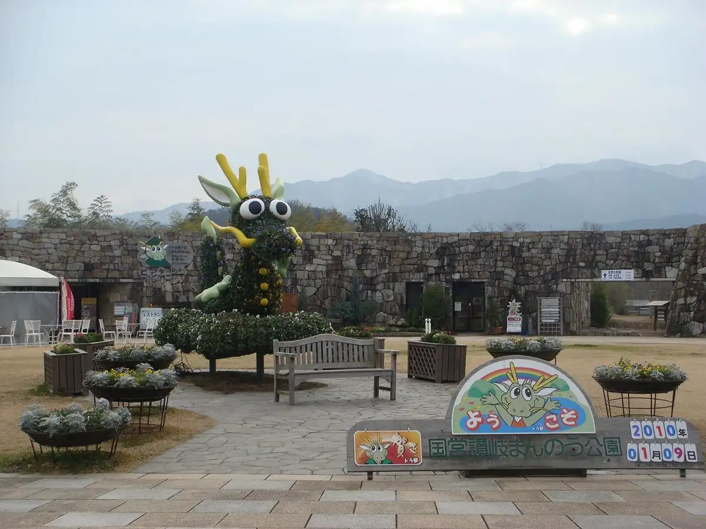
Stay
湯山荘 阿讃琴南
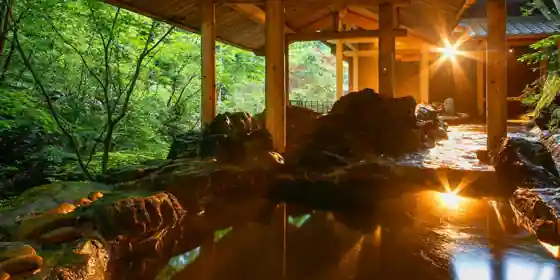
Yuyama So Asan Kotonami
Inn in Katsura, Manno with a quiet countryside setting.
清流庵
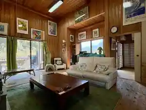
Seiryu Iori
Dining
谷川米穀店
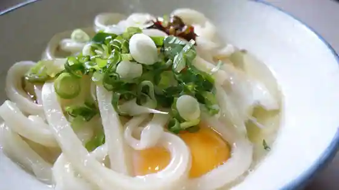
Tanigawa Beikoku
山内うどん店
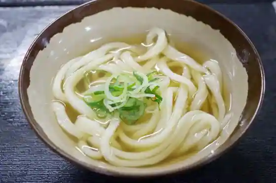
Yamauchi Udon
三嶋製麺所
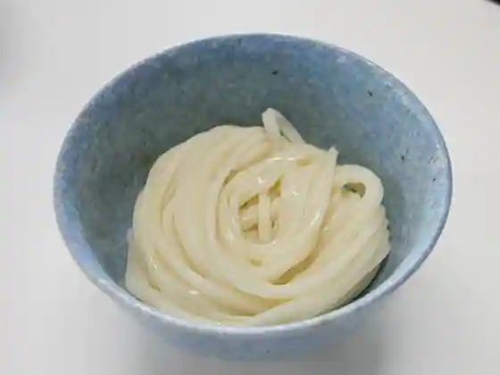
Mishima Seimen Tokoro
長田うどん
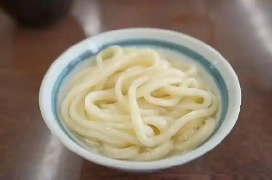
Nagata Udon
元祖しょうゆうどん 小縣家
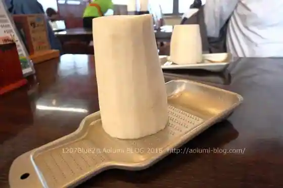
Ganso Shoyudon Chisagata Ie
兼平屋
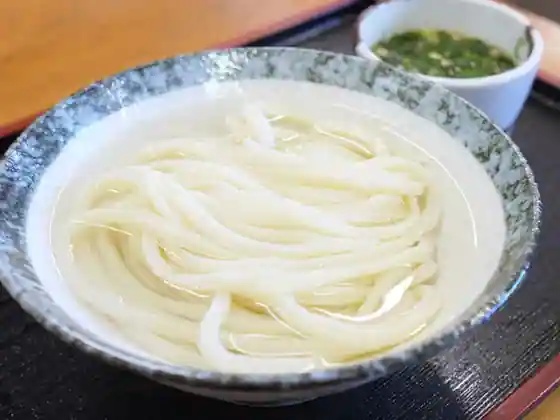
Kanehira Ya
SUNNYSIDE FIELDS
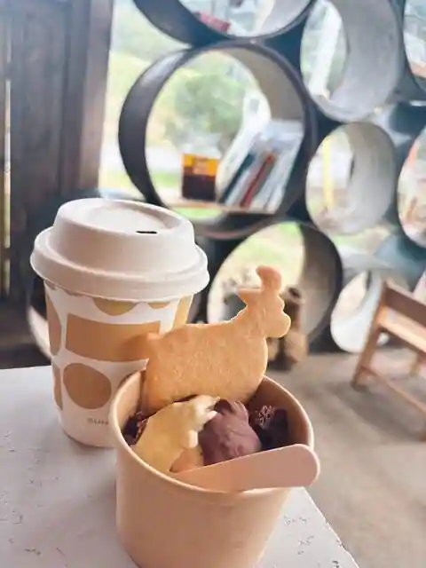
SUNNYSIDE FIELDS
カレンズ
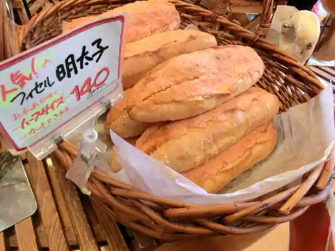
Karenzu
ハナあかり
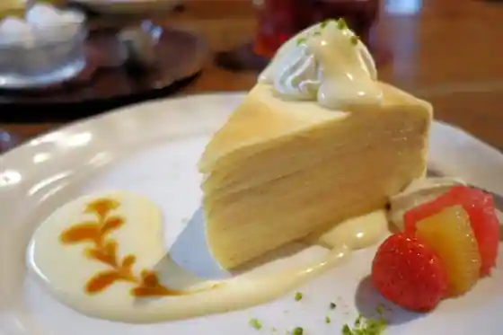
Hana Akari
pancafé junju
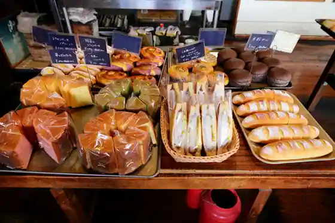
pancaf E junju
山よし 佐文店
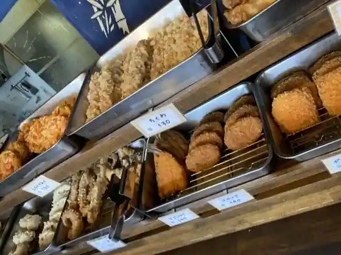
Yama Yoshi Sa Bun
やましょう
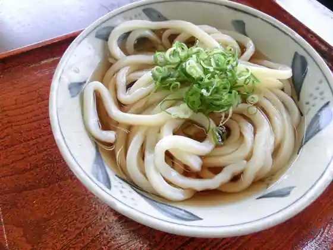
Yamasho
田舎そば 川原
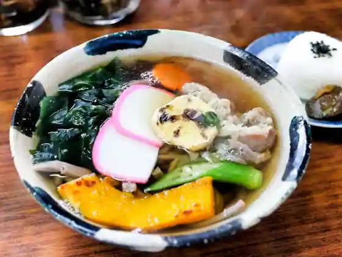
Inaka Soba Kawara
めんくい
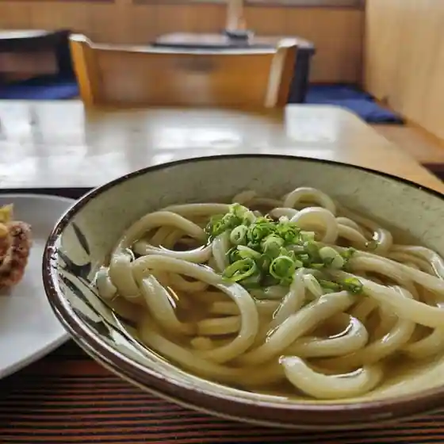
Menkui
山神うどん
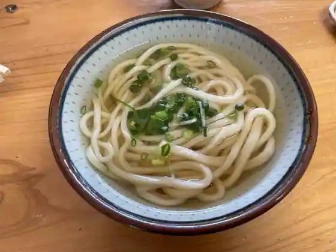
Sanshin Udon
ブーランジェリー ヴァン
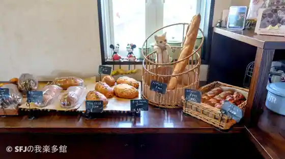
Buranjieri Van
香川製麺所
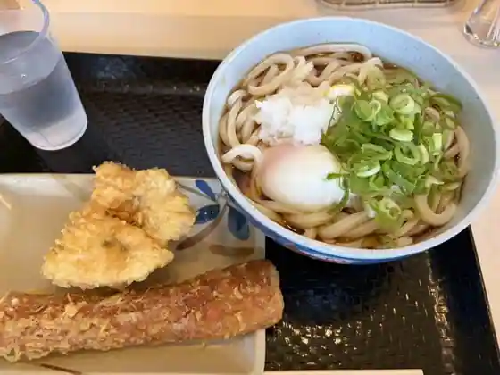
Kagawa Seimen Tokoro
旬菜旬魚 いえもんや
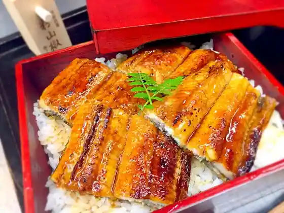
Jun Na Shungyo Iemonya
こんぴらや 工場本店
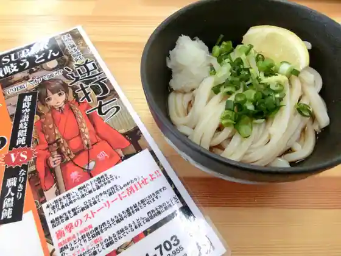
Konpiraya Kojo Hon
歌月
Uta Gatsu
かりん亭
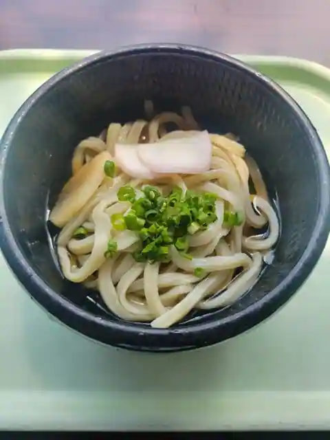
Karin Tei
道の駅ことなみ
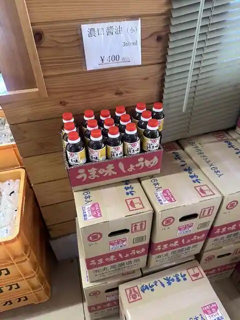
Michi No Eki Kotonami
そば処 おいで家
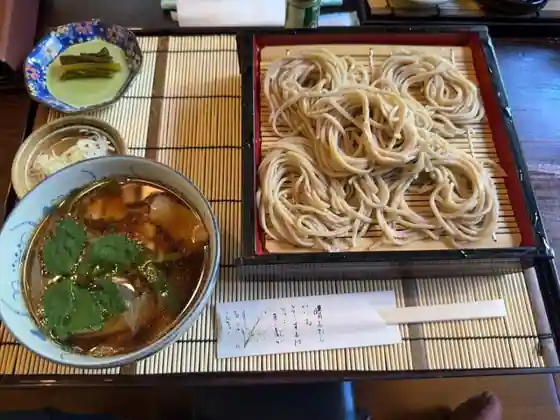
Soba Tokoro Oide Ie
Sights
Kokuei Sanuki Manno Park
Manno Ike
Manno Tenmondai
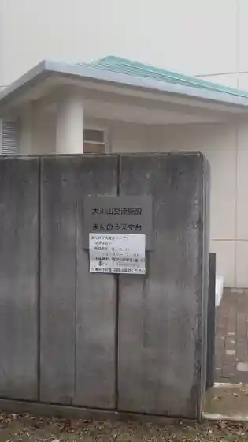
Himawari Village
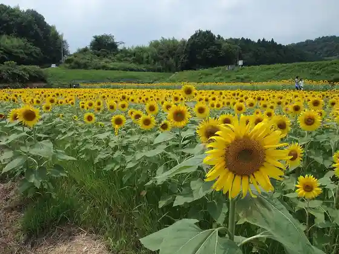
Karin no Oka Park
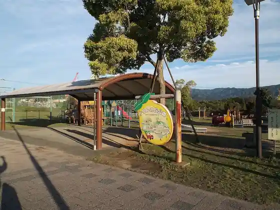
Kobashi Falls